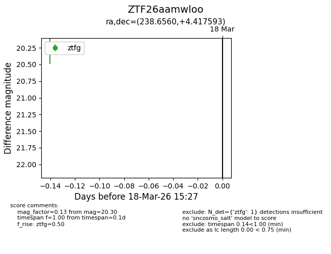
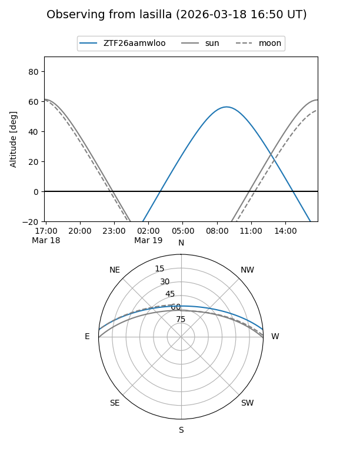
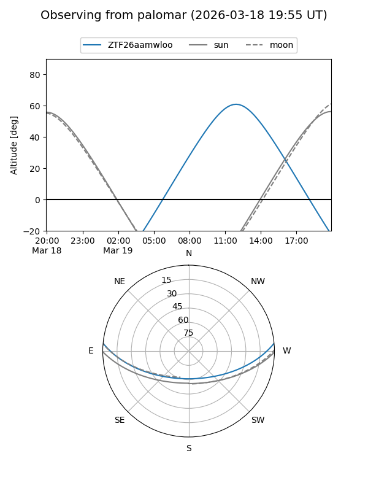

ZTF26aamwloo
Target ZTF26aamwloo at 2026-03-18 15:29
Aliases and brokers:
FINK: link
Lasair: link
ALeRCE: link
alt names
ZTF26aamwloo (ztf,fink_ztf)
Coordinates:
equatorial (ra, dec) = 238.6560,+4.41759
equatorial (HMS+DMS) = 15:54:37.45,+04:25:03.34
galactic (l, b) = (13.7662,+40.82764)
Flags:
Photometry:
last ztfg=20.30
1 ztfg detections
Lightcurve

Visibility


Additional plots